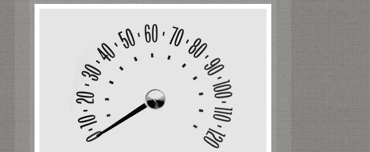

Speedometer Challenge

Create a functional speedometer using HTML, CSS, and jQuery.
Take a look at the collection of Chevrolet speedometers from Christian Annyas from between 1941 and 2011. Focusing on typeface selection, recreate a speedometer and make it functional with jQuery and CSS3 Animations.